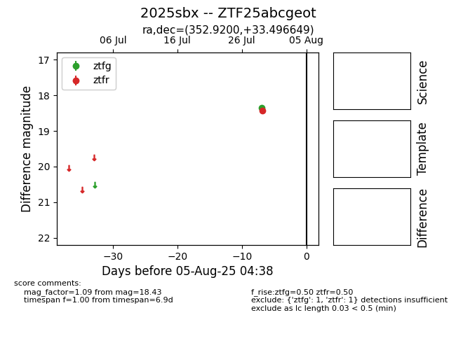

Target 2025sbx at 2025-08-27 05:42, see:
FINK: fink-portal.org/ZTF25abcgeot
Lasair: lasair-ztf.lsst.ac.uk/objects/ZTF25abcgeot
ALeRCE: alerce.online/object/ZTF25abcgeot
TNS: wis-tns.org/object/2025sbx
YSE: ziggy.ucolick.org/yse/transient_detail/2025sbx
alt names
ZTF25abcgeot (ztf,fink)
2025sbx (tns,yse)
ATLAS25iho (atlas)
coordinates:
equatorial (ra, dec) = (352.9200,+33.49666)
galactic (l, b) = (104.4052,-26.48950)
photometry
last atlasc=18.10, atlaso=19.02, ztfg=19.56, ztfr=18.77
2 atlasc, 12 atlaso, 7 ztfg, 7 ztfr detections
